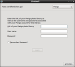

Piwigo
Dieser Artikel wurde für die folgenden Ubuntu-Versionen getestet:
Dieser Artikel ist mit keiner aktuell unterstützten Ubuntu-Version getestet! Bitte diesen Artikel testen und das getestet-Tag entsprechend anpassen.
Artikel für fortgeschrittene Anwender
Dieser Artikel erfordert mehr Erfahrung im Umgang mit Linux und ist daher nur für fortgeschrittene Benutzer gedacht.
Zum Verständnis dieses Artikels sind folgende Seiten hilfreich:
Piwigo  (PWG, ehemals PhpWebGallery) ist eine webbasierte und datenbankgestützte Bildergalerie im Stil von Gallery oder Coppermine. Besonders interessant sind zwei Konzepte: zum einen kann die Galerie aus lokalen Programmen wie z.B. digiKam oder Shotwell direkt angesteuert werden, was das Einspielen neuer Bilder erleichtert. Zum anderen ermöglicht eine integrierte Benutzerverwaltung eine gemeinsame Galerie beispielsweise innerhalb einer Familie oder einer WG. Wer mag, kann natürlich auch seine eigene Foto-Community gründen.
(PWG, ehemals PhpWebGallery) ist eine webbasierte und datenbankgestützte Bildergalerie im Stil von Gallery oder Coppermine. Besonders interessant sind zwei Konzepte: zum einen kann die Galerie aus lokalen Programmen wie z.B. digiKam oder Shotwell direkt angesteuert werden, was das Einspielen neuer Bilder erleichtert. Zum anderen ermöglicht eine integrierte Benutzerverwaltung eine gemeinsame Galerie beispielsweise innerhalb einer Familie oder einer WG. Wer mag, kann natürlich auch seine eigene Foto-Community gründen.
Die Anwendung ist zwar für einen dezidierten (Internet-)Server gedacht, aber auch eine lokale Installation ist möglich. Funktionen:
| Galerie mit Standard-Thema (Sylvia) |
Upload-Möglichkeiten:
Webformular (inkl. Flash-basierter Variante)
FTP
Programme mit Piwigo-Unterstützung (siehe unten)
Öffentliche und private Alben
Virtuelle Alben (Zusammenfassung von Bildern zu einem Thema)
Anzeige von Metadaten
viele vorgefertigte Suchmasken, auch Freitext-Suche möglich
Benutzerkommentare und RSS-Feed
Benutzer- und Gruppenverwaltung
Themen (Skins)
Erweiterungen (Plugins)
mehrsprachige Oberfläche
Eine Online-Demo  ist verfügbar. Nachteilig ist eine an vielen Stellen veraltete und lückenhafte Dokumentation. Auch die Anbindung externer Programme funktioniert nicht immer stabil und erfordert unter Umständen eine manuelle Aktualisierung der betroffenen Programme.
ist verfügbar. Nachteilig ist eine an vielen Stellen veraltete und lückenhafte Dokumentation. Auch die Anbindung externer Programme funktioniert nicht immer stabil und erfordert unter Umständen eine manuelle Aktualisierung der betroffenen Programme.
Eine Liste alternativer Server-Software ist im Artikel Bilder verwalten zu finden.
Voraussetzungen¶
Die Anwendung benötigt zum Betrieb einen Webserver mit PHP-Unterstützung und eine Datenbank (die Entwickler empfehlen MySQL). Die notwendigen Informationen finden sich in den folgenden Artikeln:
Bis einschließlich Ubuntu 12.10 existieren eigene Pakete zur Installation der Datenbank-Anbindung:
piwigo-mysql - MySQL
piwigo-sqlite - SQLite
piwigo-pgsql - PostgreSQL
Optional, aber empfehlenswert zur webbasierten Verwaltung der MySQL-Datenbank ist ein Werkzeug wie phpMyAdmin. Für die manuelle Installation sollte eine leere Datenbank (z.B. piwigo) vor der Installation eingerichtet werden.
Installation¶
Hinweis:
Prinzipiell gibt es zwei Möglichkeiten zur Installation von Piwigo: über die offiziellen Paketquellen oder die jeweils aktuelle Version (manuell). Beide Varianten haben ihre Vor- und Nachteile. Entscheidend ist unter Umständen auch das Client-Programm, das mit Piwigo eingesetzt werden soll.
Piwigo ist ab Ubuntu 10.10 in den offiziellen Paketquellen enthalten. Folgendes Paket muss installiert [1] werden:
piwigo (universe)
 mit apturl
mit apturl
Paketliste zum Kopieren:
sudo apt-get install piwigo
sudo aptitude install piwigo
Sind weder Apache noch PHP oder MySQL installiert, werden alle benötigten Abhängigkeiten automatisch nachinstalliert und auf Wunsch auch konfiguriert. Allerdings treten hier unter Umständen Fehler (wie die Nicht-Aktivierung von PHP5 in Apache) auf, so dass man besser erst mit den oben genannten Voraussetzungen beginnt und diese Schritt für Schritt abarbeitet, bevor man zum Schluss piwigo installiert.
Die Installation wird mit dem Aufruf des Installationsassistenten abgeschlossen.
Manuell¶
Hinweis:
Der folgende Abschnitt wurde mit den Versionen 2.2.3 und 2.1.6 von Piwigo erfolgreich getestet.
Da sich Piwigo noch in aktiver Entwicklung befindet, kann es sinnvoll sein, die jeweils aktuellste Version selbst zu installieren. Auch eine nachträgliche Aktualisierung fällt so wesentlich leichter. Darüber hinaus ist es so möglich, das Programm ohne die erforderlichen Paketquellen auf einem Server mit Ubuntu 13.04 oder neuer zu betreiben.
Downloads gibt es hier  , Anleitungen zu Installation und Update in der Dokumentation . Die Kurzform für Piwigo 2.2.x oder neuer:
, Anleitungen zu Installation und Update in der Dokumentation . Die Kurzform für Piwigo 2.2.x oder neuer:
Aktuelle Version als "Package" (ZIP-Datei) herunterladen und entpacken [2]
kompletten Ordner mit Root-Rechten nach /var/www/ kopieren (Ergebnis: /var/www/piwigo/)
Verzeichnisrechte ändern [3][4][5]:
sudo chmod 775 /var/www/piwigo/_data/ /var/www/piwigo/local/combined/ /var/www/piwigo/upload/ /var/www/piwigo/plugins/ /var/www/piwigo/themes/ sudo chown -R www-data:www-data /var/www/piwigo/*
neue leere Datenbank
piwigoanlegenInstallationsassistenten aufrufen (Details siehe Abbildung und unten)
Einrichtung nach Abschluss der Installation die Datei database.inc.php herunterladen und kopieren:
sudo cp database.inc.php /var/www/piwigo/local/config/
http://<Server-IP>/piwigo/aufrufen, aber noch keine Bilder hochladenweiter mit der Konfiguration
Wenn man ein bestimmtes Client-Programm einsetzen will, kann unter Umständen eine ältere Version von Piwigo besser geeignet sein. Diese sind im Release Archiv zu finden. Die Installation der Version 2.1.6 verläuft wie oben beschrieben, aber Punkt 6 entfällt.
Installationsassistent¶
Zum Abschluss der Installation müssen Piwigo noch einige wichtige Informationen mitgeteilt werden. Dazu zählen die Datenbankanbindung und das Erstellen eines Administrator-Kontos. Der Assistent ist unter http://<Server-IP>/piwigo/install.php zu erreichen. Statt "<Server-IP>" ist je nach Situation auch der vollständige Domainname ("www.mydomain.de") oder "localhost" möglich.
Konfiguration¶
| Administrationsbereich |
Die Weboberfläche zur Administration ist wie die eigentliche Galerie unter der Adresse http://<Server-IP>/piwigo/ zu finden. Dort befindet sich eine Anmelde-Maske, mit der man in den Administrationsbereich gelangt.
Installation personalisieren
Benutzer anlegen (wer die Mehrbenutzerfähigkeit nicht benötigt, kann Piwigo auch ohne - nur als Administrator - nutzen)
Themen installieren
neue Bilder freischalten usw.
Normalerweise muss der Administrator von anderen Benutzern neu hochgeladene Bilder erst freigeben, da sie sonst nicht in der Galerie sichtbar sind. Mit Hilfe der Erweiterung "Community" kann man allerdings bestimmten vertrauenswürdigen Benutzer direkten Zugriff auf die Galerie gewähren, ohne dass man als Administrator eingreifen muss.
Community-Plugin
installieren und aktivieren (dies geschieht komplett innerhalb der Weboberfläche; nur Piwigo 2.2.x oder neuer)Benutzer freischalten. Diese benötigen "hohes Vertrauen", um Bilder direkt in die Galerie laden zu können
Hintergrund: Piwigo verwendet den sog. "Webmaster" als eine Art Super-Administrator. So können Benutzer Administrator-Rechte erhalten, ohne dass man Angst haben muss, dass diese ihren Status missbrauchen könnten. Faktisch sind sie damit eher Benutzer mit erweiterten Rechten.
Hinweis:
Da das Community-Plugin nicht mit Piwigo 2.1.x oder älter funktioniert, sollte man hier stattdessen die Erweiterung pwg.images.addSimple installieren. Diese Erweiterung ist zur Anbindung von Shotwell (und digiKam?) notwendig.
Schnelle Synchronisierung¶
Man kann komplette Bilderordner per FTP direkt in den Unterordner galleries der Piwigo-Installation kopieren. Um diese Bilder einzubinden, enthält die Startseite der Administration eine Schaltfläche "Schnelle Synchronisierung".
Automatische Aktualisierung¶
Achtung!
Diese Funktion ist nur bei einer manuellen Installation sinnvoll!
Wer eine Piwigo-Installation aktuell halten möchte, kann die über eine Erweiterung (Plugin) realisierte Automatische Aktualisierung nutzen. Eine Sicherung der Bilderdatenbank und anderer relevanter Dateien erfolgt bei dieser Methode automatisch.
Verwendung¶
Weboberfläche¶
Anmelden:
http://<Server-IP>/piwigo/Fotos hochladen:
die integrierte Upload-Funktion benötigt Flash. Ohne Flash kann man das "alte" Upload-Formular aktivieren.
bei Verwendung des "alten" Upload-Formulars: 8 MiB Upload-Limit beachten (kann in etc/php5/apache2/php.ini hochgesetzt werden). Um Problemen auszuweichen, Bilder vor dem Upload verkleinern.
Client-Programme¶
Neben der Bedienung über die Weboberfläche gab es eine Reihe von speziellen Client-Programmen, mit denen sich Piwigo ansteuern ließ. Diese Programme hatten aber den Nachteil, dass sie nicht mit jeder Piwigo-Version funktionierten. Da inzwischen lokale Bildverwaltungen direkt mit Piwigo kommunizieren können, sind diese Programme in der Versenkung verschwunden.
Shotwell¶
| Bilder hochladen |
|  |
| Anmeldung |
Um aus Shotwell heraus Bilder an Piwigo zu übergeben, ist mind. Version 0.8 oder neuer von Shotwell erforderlich. Leider scheint die Anbindung nicht mit der oben erwähnten Community-Erweiterung (ab 2.2.x oder neuer) zu funktionieren. Erst wenn man einem Benutzer Administrator-Rechte in der Benutzerverwaltung von Piwigo zuteilt, funktioniert das "Veröffentlichen" von Bilder in Piwigo (auch in andere, bereits vorhandene Galerien).
Die Anbindung ist derzeit insgesamt noch als experimentell zu beurteilen (Stand: Juli 2011). Obwohl sie prinzipiell funktioniert, fehlen wesentliche Funktionen wie das Löschen von Bildern oder das Erstellen von Unterordnern in bereits vorhandenen Galerien.
Darüber hinaus wurden Probleme mit sehr großen Bildern beobachtet, bei denen Piwigo kein Vorschaubild erstellt. Dies ist evtl. ein PHP-Konfigurationsproblem (memory_limit = ...) bei Verwendung des "alten" Upload-Formulars.
digiKam¶
Auch digiKam bzw. das Paket kipi-plugins unterstützt ab Ubuntu 10.10 das Hochladen von Bildern in eine Piwigo-Galerie. Zunächst wird empfohlen, ein neues (leeres) Album im Administrationsbereich der Piwigoseite zu erstellen. Dann können in digiKam die zu exportierenden Bilder markiert und im Hauptmenü "Export -> Piwigo" ausgewählt werden. Im Exportfenster müssen unter "Benutzerkonto" die Zugangsdaten für den Admin-Bereich der Piwigoseite (einmalig) eingegeben werden. Dann lässt sich in der Ordnerliste das zuvor erstellte (leere) Album für den Export auswählen. Abschließend fragt digiKam noch, welche Abmessungen die zu exportierenden Bilder bekommen sollen. Das Skalieren und der Upload laufen dann automatisch.
Links¶
Projektseite
(die englischen Projektseiten sind in der Regel aktueller)Erweiterungen
- Themen, Plugins, Mods und SprachpaketepLoader compile
- selbst aus dem Quelltext erstellen
Piwigo - Wikipedia
Piwigo - im französischen Ubuntu-Wiki
- Erstellt mit Inyoka
-
 2004 – 2017 ubuntuusers.de • Einige Rechte vorbehalten
2004 – 2017 ubuntuusers.de • Einige Rechte vorbehalten
Lizenz • Kontakt • Datenschutz • Impressum • Serverstatus -
Serverhousing gespendet von